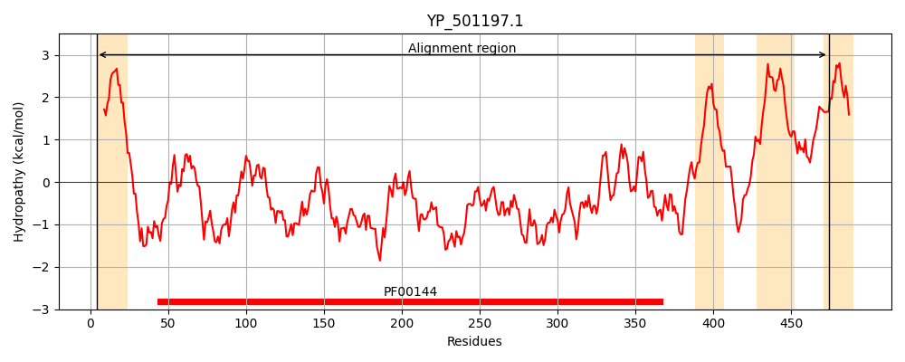
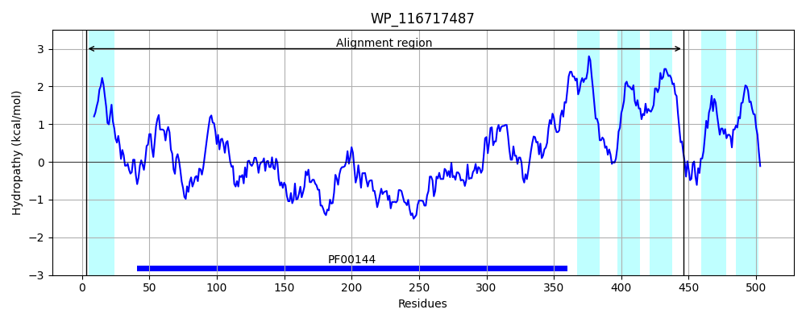
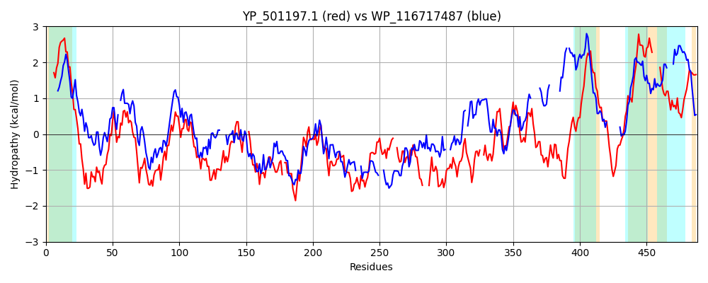

Hit Accession: WP_116717487
Hit TCID: 9.B.306.1.3
Hit Description: gnl|BL_ORD_ID|21793 gnl|TC-DB|WP_116717487|9.B.306.1.3 class A beta-lactamase-related serine hydrolase [Anaerolineales bacterium]
Mach Len: 488
e:0.000000
Query TMS Count : 4
Hit TMS Count: 6
TMS-Overlap Score: 2.750000
Predicted Substrates:None
BLAST Alignment:
Score: 287 , Bit scores: 115 bits, E-value: 1.5e-27, Alignment length: 488, Percentage identity: 25
Query: 4 KKLYFLSISIIILVAISIAIYITLNSNTKTRLTNDSQQQIDTIIEHDLQKGHIPGASILIVKNGKVFLNKGYGYQDVDKKVKASPTTKYEIASNTKAFTGLAILKLAQEGRLNLNDAVSKHVPHFKMNYNGQNETITIKQLLAQTSGIP---SDITSEDSVTSKNNRLNDVTHAIMGD-ELHHKPGEEFEYSNMNYDLLGLIIQNVTKQSYTKYITNSWLKPLHMTHTSFKQTNYKSKHDAIGYELQGSTPVVSKPEFNLW--DTPSAYMMTSTEDLEHWIKF----QLNPPDKYKSLVQQSHKNLSSTIGEPNANAYASGWFTNN--DEHLVFHSGTLDNFSSFILLNPKQNYGIVVLANLNSEYVPKLVEHLNTQIVNHKRYSTVASMLNQYKDQFNIVTVLMTTLILLAFIFSAYRAWQMRHGQILLRRSKRIAVLSWLSLCICIALALILY-----ALPYLILGSNNWSFVLTWLPIEIKLALI 474
+K+YF + +I +A + L + + ++ +D ++E G I G S+LI ++G VFLN+GYG D + + +P T++ +AS +K+FT +AIL L +GRLN+ D + H+ + G ITI QLL TSG+ DI S+ + + I G+ L +PGE+++Y+N Y LL II+ + QSY ++ + PL+M + ++ + S A+GY + T + E+ W + ++T DL W + QL P + +++ + + + TI P + G ++ +G S+F L P ++VL N ++H++ + +A L D +V+ L L+L + W R+ R + WL L I +A Y LP L+ + + VL ++ +E L +
Sbjct: 3 QKMYF--VLLISTIAALPLLTWALFGPPRLVVKPEAASHLDELLEQWALDGTISG-SVLIAQDGVVFLNEGYGLADRAQGIPNTPGTRFHLASLSKSFTAMAILILQSQGRLNVQDPICNHMVRCSEAWQG----ITIHQLLTHTSGLSPRLHDIVSKAARKPEAPPDPGYYIEIAGEVPLETRPGEQYDYNNFGYTLLAHIIEQASGQSYADFLDKNIFTPLNMRDSGYEDS---SSGGALGYSYRYDT---TGAEYEQWPISDGEGQLYSTTGDLYLWDQALYTDQLLPQAELETMFE---RYVPQTIDVPGF-GWGYGVLVTKLLGRPVIAGAGGSGYHSTFWLRYPADGLTLIVLMNQGD------IDHMSVLL-------AIAGAL-FLSDLVFLVSALAFNLLLAILFVAQKNEW---------TRAVRGIGIMWLLLAIPLAFVFARYLAEGMGLPILV----SLALVLLYMLVEFLLDFV 446 | Protein Hydropathy Plots: |
|---|
|  |  |
Pairwise Alignment-Hydropathy Plot:
|
|---|
|  |